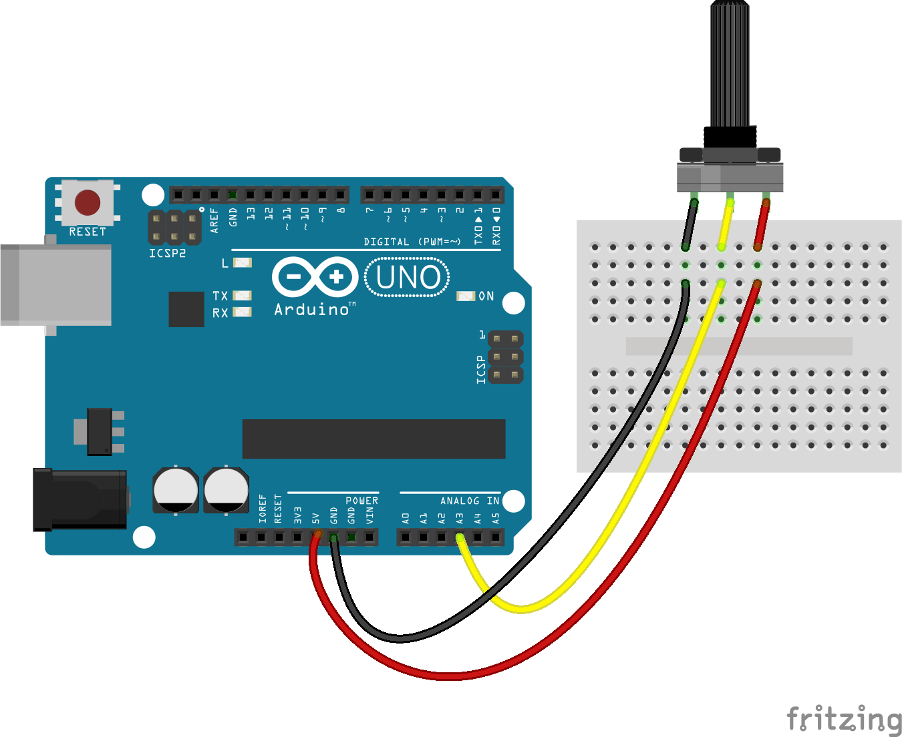

Sensors
Frost uses a variety of different sensors, for both understanding its surroundings and understanding itself. These sensors are what give Frost intelligence and are what make Frost autonomous.
Encoders
There are two potentiometers on the launcher that act as encoders for sensing what angle the pan motor and arm motors are at. This ensures for proper interfacing with the currently read angle and the set point angle from the received data of angle and distance. The encoders are critical for the PID control and Bang-Bang control in the launcher’s Firmware to work, as they tell the launcher how much more it needs to move before it hits the set point. These thus help Frost understand its own orientation and adjust accordingly.
Lidar
The LIDAR is a spinning distance sensor, in order to grab a live 2D scan of its surroundings. We created one from a Lidar Lite V3 linear distance sensor. We used 3 small DC motors to spin the whole contraption. A photo interrupter and encoder wheel can determine the LIDAR’s position. The encoder wheel has a slightly larger hole than the others. This way, we can determine the LIDAR’s zero position for syncing and calibration. The housing and internals are mainly 3D printed, with the exception of the bottom plate and encoder wheel. The LIDAR’s data is used in the LIDAR module, where the readings are converted from hexadecimal measurements to base 10 numbers for angle and distance. The LIDAR sits at the front of the robot near the Kinect, acting as stereoscopic vision to the eyes. This is the main sensor that allows Frost to sense its environment.
We referenced this page to make our Lidar
Kinect
The Kinect actually has multiple different sensors, including a camera and two infrared sensors. Because the infrared sensors don’t have the range needed for our project, we only utilize the functionality of the camera. The Kinect camera is used in the Body Detection module in Software to find and track human bodies. The camera sits at the front of the launcher and thus is placed in a way to match human eyes for maximum functionality. This is the main sensor that allows Frost to differentiate its environment and tell what is what.